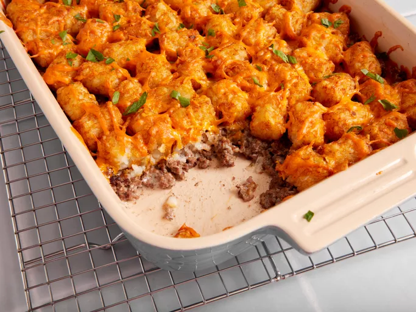

Tater Tot Casserole

Description
This Tater Tot casserole is a quick and easy dinner that everyone will love. Just four basic ingredients come together for this comforting dish.
Ingredients
- Ground Beef
- Cream of Mushroom Soup
- Tater Tots
- Cheddar Cheese
- Salt & Pepper
Steps
- Cook ground beef, stir in soup and seasonings
- Drain beef and transfer to a greased casserole dish
- Top with Tater Tots and cheddar cheese
- Bake until Tater Tots are golden brown